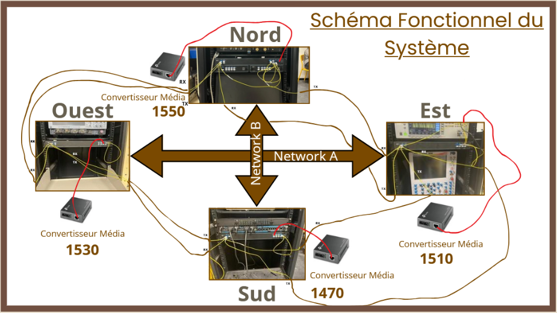
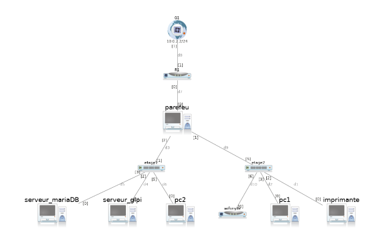
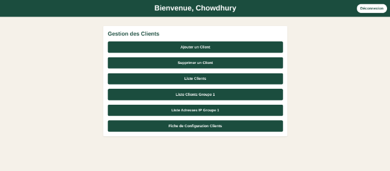
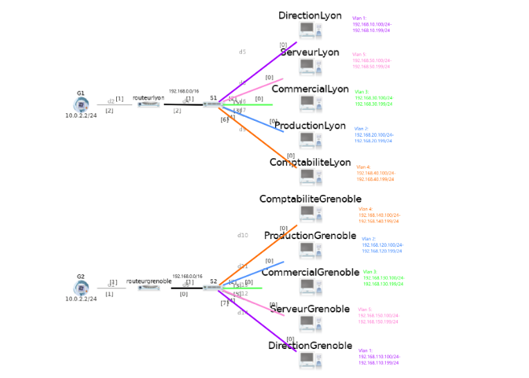
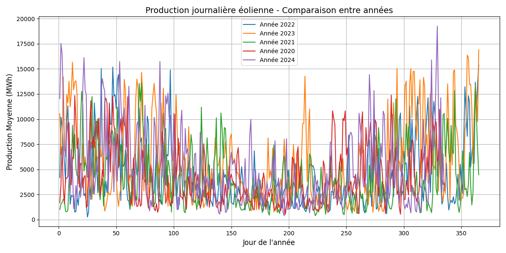
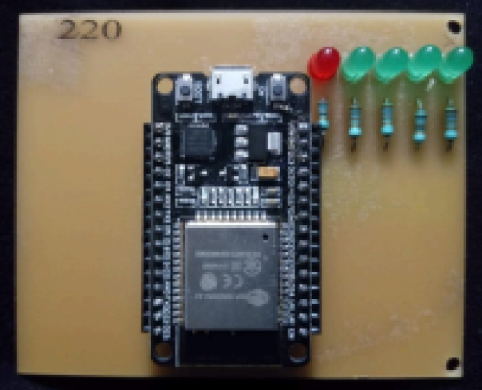
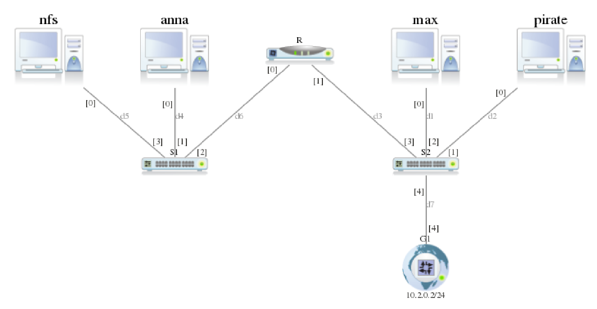

Projets
Projets personnels
Mes projets personnels seront ajoutés ici.
Projets universitaires

SAE 4.01 – Sécurité & pentest
Dans le cadre de la SAE 4.01 « Sécuriser un système d’information », j’ai réalisé individuellement plusieurs challenges sur la plateforme Root-Me, qui reproduisent des situations réelles d’attaque. Le but était d’adopter une double posture : celle de l’attaquant (Red Team), qui cherche à compromettre un système, et celle du défenseur (Blue Team), qui l’analyse et le sécurise. Pour chaque faille, j’ai évalué l’impact sur la confidentialité, l’intégrité et la disponibilité, puis proposé des contre-mesures adaptées.
Les challenges réalisés
- Reconnaissance (SOC réseau) : analyse de logs ELK et Suricata pour retrouver l’IP du scanner, la cible, les ports ouverts (SSH, SMB, LDAP, Kerberos, RDP…) et le type de scan utilisé (scan SYN). La liste des services exposés laissait penser à un contrôleur de domaine.
- Authentification SSH : connexion avec un mot de passe faible, découverte d’une sauvegarde de clé privée lisible, puis élévation de privilèges grâce à un script autorisé en
sudo: injection de ma propre clé publique pour accéder au compte d’un autre utilisateur. - Service réseau (FTP) : analyse d’une capture
.pcapqui montre que le protocole FTP transmet identifiants et données en clair, donc récupérables sans effort. - Injection de commande (SOC web) : analyse des logs d’un serveur web pour repérer l’IP malveillante, isoler la requête qui injecte une commande
wgetafin de télécharger un probable web shell, et décoder un message caché en Base64 dans le User-Agent.
Outils et environnement
Nmap, Hydra, Burp Suite, Netcat/Telnet, ELK et Suricata pour l’analyse de logs. Travail sous Penguin Linux (Linux sur Chromebook) à la place de Kali.
Contre-mesures proposées
Pare-feu et segmentation réseau, IDS/IPS, désactivation des services inutiles, mots de passe forts et authentification SSH par clé uniquement, permissions strictes sur les clés (600), Fail2Ban, principe du moindre privilège sur sudo, remplacement de FTP par SFTP/FTPS, validation des entrées utilisateur côté serveur, WAF et surveillance des logs.
SAE 3.04 – Découvrir le pentesting
Cette SAE m'a permis de découvrir le pentesting en reproduisant les différentes phases d'un test d'intrusion, dans un cadre pédagogique et éthique. J'ai monté un laboratoire virtuel isolé, identifié les vulnérabilités de deux machines cibles, exploité certaines d'entre elles de façon contrôlée, puis formulé des recommandations de sécurité.
Environnement de test
- Machine attaquante : Kali Linux 2020.3 (32 bits).
- Machines cibles : Windows XP Édition Familiale SP3 et Metasploitable 2, deux systèmes volontairement vulnérables.
- Réseau : réseau interne VirtualBox (intnet), qui isole totalement le laboratoire d'Internet et du système hôte, avec un adressage IPv4 commun (192.168.10.0/24).
Démarche suivie
- Reconnaissance : vérification de la connectivité avec
pinget requêtes ARP. Windows XP ne répondait pas au ping car son pare-feu bloque l'ICMP, mais l'ARP a confirmé sa présence sur le réseau. - Scan de vulnérabilités : installation et configuration de Nessus sur Kali, puis scans de Windows XP et de Metasploitable 2. Le premier scan de XP donnait peu de résultats à cause du pare-feu : j'ai adapté les paramètres (désactivation du ping ICMP) et désactivé temporairement le pare-feu pour obtenir une analyse complète. Nmap a servi à identifier les services et à confirmer les failles.
- Exploitation : sur Windows XP, exploitation de la faille critique MS08-067 (service Server, exécution de code à distance sans authentification) avec Metasploit, jusqu'à l'ouverture d'une session Meterpreter. Sur Metasploitable 2, exploitation du service UnrealIRCd (CVE-2010-2075) pour obtenir un accès avec privilèges élevés.
- Post-exploitation : navigation dans le système de fichiers, création et suppression de fichiers, gestion des processus de la machine compromise.
Outils
VirtualBox, Kali Linux, Nessus, Nmap, Metasploit Framework (Meterpreter).
Recommandations de sécurité
Mise à jour des systèmes et remplacement des systèmes obsolètes, désactivation des services inutiles, mise en place de pare-feu et de filtrage réseau, déploiement de solutions IDS/IPS et sensibilisation des utilisateurs aux bonnes pratiques.
SAE 3.03 – Réseau sécurisé multi-sites
Cette SAE consiste à concevoir un réseau informatique sécurisé reliant plusieurs sites d'une organisation. Le but est de répondre aux besoins de l'entreprise (sites distants, utilisateurs, services réseau) tout en garantissant la sécurité des données qui circulent entre les sites.
Démarche de conception
- Analyse des besoins : prise en compte des sites distants, des utilisateurs et des services réseau nécessaires.
- Stratégie de sécurité : pare-feu, chiffrement et politique de mots de passe robustes.
- Choix du matériel et des logiciels : équipements compatibles et administrables de façon centralisée.
- Supervision centralisée : surveillance et gestion du réseau à distance.
- Configuration de la sécurité sur chaque site : pare-feu et mesures de protection.
- Tests : vérification que le réseau est fonctionnel et sécurisé.
- Sauvegarde et restauration : procédures pour protéger les données en cas de panne ou d'incident.
- Sensibilisation : information des utilisateurs sur leurs responsabilités en matière de sécurité.
Notions de sécurité abordées
Critères D.I.C.P (Disponibilité, Intégrité, Confidentialité, Preuve), différence entre sûreté et sécurité, notions de menace, de vulnérabilité et de risque, et mécanismes de protection : cryptographie, pare-feu, contrôle d'accès, antivirus, audit et sensibilisation. Le cas Stuxnet (2010) illustre comment une clé USB infectée peut compromettre un réseau industriel.
SAE 3.02 – Quiz Challenge (web)
Dans le cadre de la SAE 3.02 « Développer des applications communicantes », notre équipe de quatre étudiants a conçu Quiz Challenge, une application web de quiz. Le joueur se connecte, choisit un mode de jeu, un thème et un niveau de difficulté, répond à des questions, puis retrouve son score dans un classement et des statistiques. Le projet a été réalisé et testé en local : l'application n'a pas été déployée en ligne.
Architecture
- Front-end : HTML, CSS et JavaScript. L'interface gère la connexion du joueur, le choix du thème et du sous-thème, la configuration de la partie, le déroulement du quiz et l'affichage des scores.
- Back-end : scripts PHP qui reçoivent les requêtes du front, interrogent la base de données et renvoient les résultats au format JSON.
- Base de données MySQL : 7 tables (joueurs, thèmes, sous-thèmes, niveaux, questions, réponses proposées, scores), avec 9 thèmes et 42 sous-thèmes.
Travail en équipe et réseau
Comme l'application n'était pas hébergée sur un serveur en ligne, chaque membre de l'équipe travaillait sur sa partie depuis chez lui, sur son ordinateur personnel. Pour développer et tester ensemble à distance, nous avons utilisé Hamachi, un logiciel de réseau privé virtuel (VPN) : les ordinateurs de l'équipe se retrouvent dans un même réseau, comme s'ils étaient sur le même réseau local. Mon front-end, lancé sur mon ordinateur, pouvait ainsi appeler le back-end et la base de données qui tournaient sur l'ordinateur d'une camarade, ce qui a permis de tester l'application complète sans passer par un hébergeur. Le code était partagé avec Git et GitHub.
Ma partie : le front-end
Je me suis occupée du front-end : pages de l'application, navigation, gestion de la session du joueur, communication avec le back-end par requêtes JavaScript, et affichage des questions, des scores et des classements.
Outils
HTML, CSS, JavaScript, PHP, MySQL, Hamachi, Git, GitHub, Visual Studio Code.

SAE 3.01 – Système de transmission
Dans le cadre de la SAE 3.01 « Mettre en œuvre un système de transmission », notre groupe a conçu, réalisé et validé un système de transmission optique en anneau, sur fibre monomode OS2, avec une distance d'au moins 10 km. Le cahier des charges demandait un débit supérieur à 1 Gbit/s, au moins deux longueurs d'onde multiplexées sur la même fibre (WDM) et une fonction d'insertion et d'extraction optique (OADM) sans interruption du trafic.
Organisation du projet
L'équipe était répartie en trois groupes : conception, fabrication et caractérisation. J'étais adjointe de la cheffe de projet, avec qui je répartissais le travail entre les binômes selon les avancées et les difficultés. Le suivi se faisait avec Trello et un diagramme de Gantt sur l'ensemble des séances.
Conception
- Recherche bibliographique : modulation OOK, multiplexage WDM/CWDM, fonction OADM et réseaux de Bragg (FBG).
- Choix techniques : architecture en anneau en CWDM, avec quatre longueurs d'onde (1470, 1510, 1530 et 1550 nm), une par pôle : Sud, Est, Ouest et Nord.
- Schémas fonctionnels : circulation des longueurs d'onde dans l'anneau et position des modules OADM.
Fabrication
- Inventaire du matériel : convertisseurs de média Gigabit, modules SFP CWDM, modules CWDM OADM, jarretières et adaptateurs.
- Préparation et nettoyage de la fibre, puis montage des coupleurs WDM et des modules OADM.
- Câblage de l'anneau entre les quatre pôles et mise en service des longueurs d'onde.
Caractérisation
- Diagramme de l'œil : observation du signal à l'oscilloscope avec un photodétecteur rapide.
- OSNR : mesure avec un analyseur de spectre optique Anritsu. Valeur relevée d'environ 38 dB, pour une exigence supérieure à 20 dB.
- Fibre : mesures de réflectométrie (OTDR).
- BER : estimation à partir de l'OSNR et de l'ouverture de l'œil.
Ma contribution
Avec la cheffe de projet, j'ai analysé le cahier des charges et les spécifications techniques, rédigé la partie caractérisation et les résultats, et réalisé la mise en forme de la présentation. Le projet s'est terminé par une soutenance de 20 minutes suivie de 10 minutes de questions.
Outils
Fibre OS2, modules SFP CWDM, OADM, convertisseurs de média, oscilloscope Tektronix, analyseur de spectre optique Anritsu, OTDR, Trello.

SAE 2.04 – Exploitation et administration d'un réseau
Dans le cadre de la SAE 2.04, nous devions concevoir, configurer et sécuriser l'infrastructure réseau d'une entreprise fictive. L'objectif était de mettre en place une architecture fonctionnelle (routage, commutation, services) tout en répondant à un cahier des charges précis et en documentant l'ensemble des manipulations pour un client.
Architecture et Commutation
- Configuration de commutateurs (VLANs, trunks, spanning-tree) pour segmenter le réseau.
- Mise en place du routage inter-VLAN et configuration des passerelles.
- Adressage IP et déploiement du protocole DHCP pour l'attribution automatique des adresses.
Services et Sécurité
- Installation et configuration de services réseau (DNS, serveur web, partage de fichiers).
- Mise en place de règles de pare-feu (Firewall) pour filtrer les flux entre les différents VLANs et l'extérieur.
- Tests de connectivité et validation des flux autorisés/bloqués via des outils comme ping, traceroute et captures de paquets.
Documentation
Un rapport complet a été rédigé, comprenant le schéma d'architecture réseau, les tableaux d'adressage IP, les configurations des équipements (switchs, routeurs, serveurs) et les résultats des tests de communication. Des captures d'écran des interfaces d'administration et des tests viennent appuyer les explications techniques.
Outils
Simulateur réseau (Cisco Packet Tracer ou GNS3), machines virtuelles Linux/Windows Server, équipements physiques (switchs, routeurs), Wireshark.

SAE 2.03 – Plateforme intelligente de gestion réseau
Dans le cadre de cette SAE, nous avons développé une solution logicielle complète pour automatiser la gestion des infrastructures réseau d'une entreprise. L'objectif était de centraliser les données clients et les ressources réseau (adresses IP, VLAN, VRF) dans une base de données, et d'offrir une interface web pour gérer le tout de manière intuitive et sécurisée.
Fonctionnalités Clés
- Gestion complète des clients (ajout, modification, suppression) via une interface web ergonomique.
- Attribution automatique de la première adresse IP libre dans le sous-réseau dédié au client.
- Assignation automatique des VLANs spécifiques à chaque site et création des VRF personnalisées.
- Recherche dynamique et filtrage des clients par nom, site ou statut d'adresse IP.
Architecture Technique
- Base de données : MySQL relationnelle pour assurer l'intégrité des données.
- Backend : Application web sécurisée développée en PHP.
- Frontend : Interface web responsive conçue en HTML et CSS.
- Automatisation : Scripts générant automatiquement les fichiers de configuration Cisco conformes (IP, VLAN, VRF).
Résultats et Livrables
La plateforme permet de générer des configurations Cisco clé en main, directement déployables sur les équipements. Elle réduit considérablement les erreurs humaines et le temps de déploiement. Le projet a été livré avec une base de données opérationnelle, l'application web complète et une documentation technique exhaustive incluant un guide utilisateur et un glossaire.

SAE 2.01 – Réseau multi-sites
Dans le cadre de la SAE 2.01 « Construire un réseau informatique pour une petite structure », nous devions concevoir et mettre en place le réseau d'une PME fictive, GreenHome Solutions, spécialisée dans la domotique écoresponsable. L'entreprise possède deux sites distants : un siège à Lyon (20 postes) et un atelier de production à Grenoble (10 postes). Les deux sites devaient être interconnectés via Internet, avec des échanges sécurisés et des services réseau de base.
Travail réalisé
- Architecture et adressage : schémas du réseau, plan d'adressage IP et découpage en sous-réseaux pour les deux sites.
- VLAN et routage : un VLAN par service (direction et comptabilité, production, commercial), routage inter-VLAN et routage entre les sites.
- Services réseau : serveurs DNS et HTTP, avec un serveur web accessible depuis l'extérieur.
- Sécurité : listes de contrôle d'accès (ACL) pour filtrer les flux, traduction d'adresses NAT/PAT pour l'accès à Internet, et administration à distance sécurisée par SSH.
- Tests : validation progressive des configurations et interception du trafic avec Wireshark pour identifier le chemin des paquets.
Organisation de l'équipe
Chaque membre avait un rôle précis : chef de projet, architecte réseau, administrateur systèmes, technicien sécurité et testeur. Le sujet demandait un journal de bord individuel et une fiche de contribution collective pour suivre la part de chacun. Le projet se terminait par une présentation orale avec démonstration sur simulateur.
Compétences travaillées
Adressage IP, VLAN, routage inter-VLAN, NAT/PAT, ACL, DNS, HTTP, SSH, analyse de trafic avec Wireshark, documentation technique et travail en équipe.

SAE 1.05 – Traitement de données énergétiques
L'objectif de ce projet était de développer un programme Python capable de traiter automatiquement un large jeu de données ouvertes (CSV) et de générer un site web présentant les résultats de manière claire et visuelle. Nous avons travaillé sur les données horaires de production d'énergie éolienne et solaire en France depuis 2020, issues de data.gouv.fr (Commission de Régulation de l'Énergie).
Lecture et Organisation des Données
- Utilisation des modules Python
csvetdatetimepour parser le fichier et extraire les informations temporelles (mois, année, heure). - Création de structures de données complexes avec
defaultdictpour organiser les données mensuelles, journalières par année et horaires. - Gestion des erreurs et exceptions pour garantir la robustesse du script face aux données manquantes ou mal formatées.
Analyse Temporelle et Statistiques
- Analyse mensuelle : Calcul des moyennes pour lisser les variations et mettre en évidence les tendances saisonnières de production.
- Analyse journalière : Suivi de l'évolution de la production au fil des jours pour comparer les différentes années.
- Analyse horaire : Étude des cycles de production sur 24 heures pour comprendre les pics et la complémentarité entre l'éolien et le solaire.
Visualisation et Génération Web
Nous avons utilisé la bibliothèque matplotlib pour générer des graphiques (courbes, histogrammes) représentant les moyennes calculées. Le programme Python génère ensuite automatiquement une page web HTML structurée (via une variable html_content intégrant le code HTML/CSS) qui présente les graphiques, des tableaux récapitulatifs et des explications claires sur la méthodologie.
Outils
Python (csv, datetime, defaultdict, matplotlib), HTML, CSS. Source des données : data.gouv.fr.

SAE 1.03 – Microprocesseur 4 bits
Dans le cadre de la SAE 1.03 (IoT), nous devions réaliser un microprocesseur 4 bits sur une carte ESP32, programmée avec Arduino IDE, puis rédiger une documentation technique comme pour un produit destiné à un client. Le travail s'est fait en deux parties : un microprocesseur piloté par des signaux de contrôle, puis un microprocesseur piloté par des instructions en mots binaires.
Structure du microprocesseur
Il est composé d'un banc de registres, d'une unité arithmétique et logique (ALU 4 bits), d'un registre accumulateur et d'un multiplexeur 2 vers 1. Il exécute quatre instructions : addition, soustraction, copie de l'accumulateur dans un registre, et chargement d'une valeur dans l'accumulateur.
Partie 1 : signaux de contrôle
- Programmation des composants en C++ : additionneur et soustracteur, multiplexeurs, décodeur, bascules D, registres, banc de registres et accumulateur.
- Pilotage du microprocesseur par des signaux de contrôle : écriture de l'accumulateur, opération de l'ALU, adresse et écriture du banc de registres, sélection du multiplexeur.
- Exécution d'un calcul en plusieurs instructions (7 + 3 − 6), avec affichage du résultat sur des LEDs.
Partie 2 : instructions binaires
- Ajout d'un bus d'instructions de 6 bits, avec un code opératoire et un paramètre pour chaque instruction.
- Génération des signaux de contrôle à partir du bus d'instructions, uniquement avec des opérations logiques de base (NOT, AND, OR, XOR), sans structure conditionnelle.
- Exécution d'un calcul plus long (10 + 3 − 4 + 5 − 2), avec des bibliothèques de serveur web asynchrone pour saisir les instructions.
Documentation
Pour chaque partie, un rapport PDF présente la structure et le fonctionnement du microprocesseur, la procédure d'exécution des instructions, des captures des entrées, du contenu du banc de registres et de l'accumulateur, des photos des LEDs et l'interprétation des résultats, avec les codes essentiels en annexe.
Outils
Carte ESP32, Arduino IDE, C++, LEDs, bibliothèques AsyncTCP et ESPAsyncWebServer.

SAE 1.02 – Routage avec Marionnet
Dans le cadre de la SAE 1.02, nous devions construire avec Marionnet, un simulateur de réseaux sous Linux, un réseau composé de deux sous-réseaux reliés par un routeur et connectés au monde réel par une passerelle. L'objectif était de configurer les interfaces et les tables de routage pour que toutes les machines communiquent entre elles et avec l'extérieur, puis de sécuriser le réseau avec un pare-feu.
Architecture
- Deux réseaux : 10.1.0.0/24 (serveur nfs, machine anna et le routeur R) et 10.2.0.0/24 (routeur R, passerelle G1, machines pirate et max).
- Un routeur et une passerelle : R relie les deux réseaux, et G1 connecte le réseau virtuel au reste d'Internet.
Travail réalisé
- Création du réseau : ajout des machines Debian, des switchs et des câbles, avec les bonnes interfaces sur le routeur.
- Adressage et routage : attribution des adresses IP avec la commande
ip, ajout des routes sur chaque machine et de la route par défaut sur le routeur, puis tests avecping. - Accès à l'extérieur : test d'accès à la machine physique depuis le réseau virtuel et téléchargement d'un fichier avec
wget, avec analyse du problème rencontré. - Sécurisation du routeur : règles
iptablessur les chaînes INPUT et OUTPUT avec une politique par défaut restrictive, en n'autorisant que l'ICMP. - Protection du réseau 10.1.0.0/24 : règles sur la chaîne FORWARD pour isoler le serveur nfs de l'extérieur, bloquer la machine pirate et journaliser ses tentatives d'accès dans
/var/log/messages.
Suite du TP
Le sujet prévoyait aussi l'interdiction des connexions SSH venant de l'extérieur, la mise en place d'un service de résolution de noms, et un service de configuration réseau sur le routeur, avec attribution des adresses selon l'adresse MAC puis de façon dynamique avec des baux de 30 jours.
Évaluation
La SAE était évaluée par un contrôle écrit d'une heure, en lien direct avec le TP.
Outils
Marionnet, Debian, ip, ping, SSH, wget, iptables.
SAE 1.01 – Hygiène informatique
Dans le cadre de la SAE 1.01 « Hygiène informatique », nous devions réaliser en binôme une courte vidéo de sensibilisation à la cybersécurité. Le contexte : l'administrateur système est l'un des premiers interlocuteurs des nouveaux collaborateurs d'une entreprise. Il doit leur faire adopter les bons réflexes pour qu'ils deviennent des utilisateurs conscients et responsables de leur environnement numérique.
Le travail demandé
- Un message, une problématique : la vidéo devait traiter un seul sujet de cybersécurité, au choix : une pratique à éviter, un bon réflexe à encourager, ou la conduite à tenir en cas d'attaque.
- Format libre : vidéo, animation ou diaporama temporisé, d'une durée comprise entre 90 secondes et 3 minutes.
- Sources : le sujet demandait de s'appuyer sur les cours et sur des ressources officielles, comme les fiches de bonnes pratiques de l'ANSSI et de Cybermalveillance.gouv.fr.
Compétences travaillées
Sensibilisation des utilisateurs aux risques cyber, vulgarisation d'une notion technique, recherche et sélection de sources fiables, conception d'un message clair et pertinent, travail en binôme et respect d'une échéance de dépôt.
Évaluation
Les vidéos étaient notées par un jury d'enseignants du département R&T selon la pertinence, la clarté et l'originalité du message, ainsi que la qualité de la communication. Les meilleures productions participaient à un concours au niveau de l'IUT.